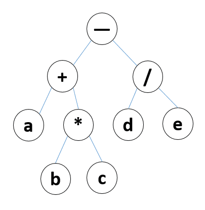

二叉树
-
深度优先遍历
- 前序遍历 访问根–>遍历左子树–>遍历右子树; 可以用来显示目录结构。
- 中序遍历 遍历左子树–>访问根–>遍历右子树; 可以实现表达式树，在编译器底层很有用。
- 后序遍历 遍历左子树–>遍历右子树–>访问根; 计算目录内的文件及其信息。
-
广度优先遍历
二叉树的遍历要使用到 栈 和 队列 还有 递归 等
// 树的节点表示
{
value: '',
left: {},
right: {}
}
(a+b*c)-d/e，该表达式用二叉树表示如图：

var tree = {
value: "-",
left: {
value: '+',
left: {
value: 'a',
},
right: {
value: '*',
left: {
value: 'b',
},
right: {
value: 'c',
}
}
},
right: {
value: '/',
left: {
value: 'd',
},
right: {
value: 'e',
}
}
}
对该二叉树进行深度和广度遍历为：
- 前序遍历：- + a * b c / d e
- 中序遍历：a + b * c - d / e
- 后序遍历：a b c * + d e / -
- 广度遍历：- + / a * d e b c
遍历二叉树有一个非递归特点，即根节点其实也是某一个左节点或者右节点，所以当遍历所有的左子树的时候，跟节点肯定会被遍历到，而右节点则入栈等待被遍历。